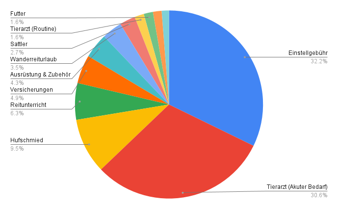
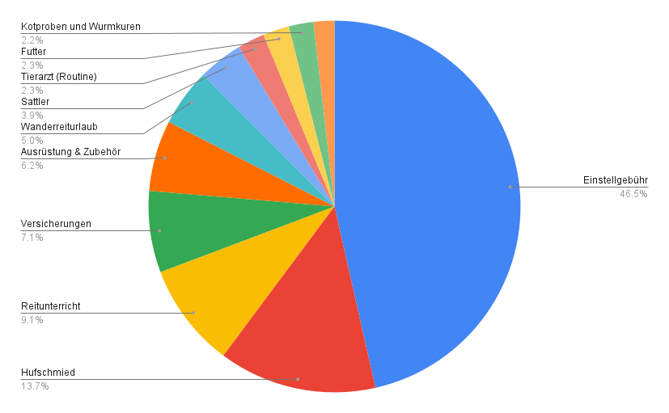

Pferde kosten Geld, ohne Frage. Ich bin nicht nur beruflich Futterberaterin, sondern privat auch Pferdebesitzerin wie ihr. Mein Pferdeleben ist eigentlich sehr durchschnittlich: Ich habe ein 9 Jahre altes Connemara Pony. Nero wohnt in einem Offenstall in Niederösterreich, dort ist er ganz regulär eingestellt. Er wird „ambitioniert" freizeitmäßig geritten und vielseitig gefördert – von Dressur über Springen, Wanderreiten, Rinderarbeit, Gymnastizierung an der Hand oder einfach nur gemütliche Spaziergänge: Das ist es, was bei uns typischerweise am Programm steht.
Grundsätzlich ist Nero fit und gesund, allerdings ist sein ISG eine orthopädische Baustelle, die mir eigentlich von Beginn an etwas Kopfzerbrechen – und hohe Tierarztkosten – bereitet. Huftechnisch könnte Nero wahrscheinlich einen gewissen Teil des Jahres barhuf gehen, ist aber ganz ehrlich gesagt aus Bequemlichkeit vorne mit Duplos beschlagen, da der Abrieb bei gewissen Bodenverhältnissen doch zu stark wird, und ich aufgrund seines Rückens keine zusätzliche Fühligkeit riskieren möchte. Hinten kommt er barhuf gut zurecht und trägt im Gelände Hufschuhe – bei Wanderritten hat er Vollbeschlag.
Wie ihr euch denken könnt, liegt mir das Thema bedarfsgerechte Ernährung auch bei meinem eigenen Pferd sehr am Herzen. Unser Offenstall kann aufgrund seiner sehr wetterexponierten Lage auf einem Hügel sowie den langen ungemütlichen Wintern durchaus eine Herausforderung für ein Pferd mit empfindlichem Rücken sein. Nero ist rassetypisch leichtfuttrig, was in der Haltungsform gut berücksichtigt sein muss. Und ehrlich gesagt möchte ich einfach, dass er rundum gesund ist – ich habe sehr wenig Interesse daran, futtertechnisch dauernd irgendwas optimieren zu müssen, Futtermittel einzukaufen und komplizierte Rationen aus vielen Komponenten zu managen.
Deshalb setze ich mich in der Regel 2x pro Jahr dran, evaluiere die aktuelle Situation sachlich – wie steht er da, was hat sich geändert? – und passe die Ration an. Das Ergebnis ist, dass ich mir sicher sein kann, dass er optimal versorgt ist, und ich nicht ständig das Bedürfnis habe, akut mit extra gekauften Produkten auf irgendwelche „Problemchen" reagieren zu müssen, weil diese durch eine gute Fütterung von vornherein abgefangen werden.
Für meine Finanzplanung habe ich mein Jahr 2025 privat und beruflich im Detail analysiert – und dachte, so eine Kostenaufstellung könnte euch auch interessieren. Immerhin sind es keine fiktiven Zahlen und keine Budgetplanung, sondern die ganz ehrliche Realität meiner Kontoauszüge aus dem vergangenen Jahr.
Na gut, sehen wir uns das mal an!

Direkt auf den ersten Blick fällt auf, dass die Einstellgebühr und die exorbitant hohen Tierarztkosten meine größten Posten waren. Das liegt daran, dass ich mich dazu entschieden habe, Neros orthopädischen Problemen wirklich so akribisch wie möglich auf den Grund zu gehen. Er ist 9 Jahre alt und im Training extrem motiviert – deshalb lohnt es sich jetzt, wirklich alles dafür zu tun, dass er sich auch 100% schmerzfrei bewegen kann.
Die Lösung war tatsächlich nicht so einfach zu finden – sonst wäre es auch nicht so teuer geworden 😅 Sein Problem war eine Kombination aus Rücken, Sprunggelenk und Fesselträger. Gefühlt war das ganze Pferd einmal von vorne bis hinten in der Bildgebung, und auch die Therapie war etwas langwierig. Wir waren aber erfolgreich, und ich weiß jetzt genau, was los ist und wie ich ihn im Aufbautraining bestmöglich unterstützen kann. Nero ist wieder vollständig belastbar und kann weiterhin ambitioniert trainiert werden – auch wenn seine Schwachstellen wahrscheinlich für immer seine Schwachstellen bleiben werden, und ich ein extra genaues Auge darauf haben werde.
In Anbetracht dieser sehr verschobenen Bilanz habe ich 2025 tatsächlich nur 1,6% meines „Pferde-Budgets" für Futter ausgegeben.
Um das Bild ein bisschen realistischer zu zeigen, habe ich die hohen akuten Tierarztkosten mal aus der Aufstellung rausgenommen. Wäre dieses Thema nicht gewesen, würde grob die Hälfte der Pferdekosten in den Stall fließen. Der Rest teilt sich auf Routine-Tierarztkosten wie Impfungen und Wurmkuren, Hufschmied, Sattler, Versicherungen sowie Reitunterricht und Wanderreiturlaube auf. Und auch hier: meine Futterkosten sind extrem überschaubar – auf den Monat heruntergerechnet sind es nur ca. 22 €!

Ich konnte es selbst nicht ganz glauben, deshalb habe ich nochmal genau alle meine Zahlungen und Bestellungen kontrolliert – aber ich habe 2025 tatsächlich nicht viel mehr als Mineralfutter sowie einen großen Sack Leckerlis gekauft 😄
Woran liegt es, dass meine Futterkosten für Nero so gering sind?
Eine korrekt bilanzierte Ration gibt mir Sicherheit. Ich setze mich 2x im Jahr hin, analysiere sachlich die Ration und ergänze im Baukastenprinzip nur das, was im Heu nachweislich fehlt. Das kann Mineralstoffergänzung sein, oder etwas Gezieltes wie ein Gelenkspräparat – aber eben nur das, was wirklich gebraucht wird. Einmal gut aufgesetzt läuft das System, ohne dass ich ständig daran herumschrauben muss.
Ich kann die Verkaufstricks der Futtermittelindustrie durchschauen – und das erspart mir wirklich viel Geld. Biotin für die Hufe, Elektrolyte im Sommer, Kräuter für den Kreislauf, Zink im Fellwechsel, Leberentgiftung sowieso irgendwie ständig... Diese Kaufargumente haben sich beinahe schon zu allgemeingültigen Bauernregeln etabliert. Wenn man sich aber mit der tatsächlichen Faktenlage dahinter beschäftigt, erkennt man schnell, dass das meiste davon ernährungsphysiologisch überhaupt keinen Sinn ergibt. Hufe bestehen kaum aus Biotin, Elektrolyte sind in Kombination mit Mineralfutter mehr schädlich als sinnvoll, die Leber arbeitet in den allermeisten Fällen gut und zuverlässig. Diese Mythen zu kennen befreit davon, ständig irgendwas nachkaufen zu müssen.
Viele Probleme sind gar keine Ernährungsprobleme – und das ist vielleicht die wichtigste Erkenntnis aus meiner Beratungsarbeit. Kreislauf, Fellwechsel, Muskelaufbau: Das sind Themen, die mir fast täglich begegnen, und für die es natürlich bequem wäre, einfach ein Produkt zu empfehlen. In Wahrheit steckt dahinter aber meistens Bewegungsmangel, Stress, schlechte Heuqualität oder ein Training, das nicht systematisch genug auf Muskelaufbau ausgelegt ist. Es ist nicht gut für das Futterberatungsgeschäft und schon gar nicht gut für den Reitsportladen um die Ecke – aber es ist nun mal so, dass nur ein sehr kleiner Teil der „Problemchen" tatsächlich durch zugekaufte Futtermittel gelöst werden kann.
Nachhaltige Rationen sind meistens die günstigsten. Wenn ich bei einer Rationsberechnung einen Nährstoff identifiziere, der fehlt, greife ich nicht automatisch zum Online-Shop. Wer einen Überblick hat und weiß, was womit austauschbar ist, kann sehr gut auf den Bauern um die Ecke oder die Mühle im Nachbarort zurückgreifen. Ich habe den konkreten Vorteil, dass Nero auf einem Hof eingestellt ist, der Landwirtschaft betreibt – Produkte wie Quetschhafer, Saaten oder Ölpresskuchen stehen uns als Einstellern direkt aus dem eigenen Betrieb kostenlos zur Verfügung. Das spart Geld und CO₂.
Und zu guter letzt: Eine gute Gesprächsbasis mit der Stallbetreiberin ist Gold wert. Nicht in jedem Einstellbetrieb herrscht zum Beispiel von Haus aus Verständnis dafür, welche Heubeschaffenheit für welches Pferd optimal ist. Hier lohnt es sich, respektvoll und interessiert das Gespräch zu suchen – oft ergeben sich daraus tolle Möglichkeiten, zum Beispiel Futtermittel in großen Mengen gemeinschaftlich einzukaufen und kostengünstig zu lagern, oder älteren Pferden energiereichen und leicht verdaulichen zweiten Schnitt zu füttern.
Das sind sie also, meine Geheimnisse der unkomplizierten Pferdefütterung. Ich bekomme nach Beratungen oft die Rückmeldung, dass sich die Kosten bereits nach 1–2 Monaten gelohnt haben, weil man mit einer guten Rationsplanung so viel Schnickschnack einsparen kann.
Ration berechnen lassen
Lass deine Futterration professionell analysieren – und spare langfristig Kosten durch gezielte Ergänzung statt Produkteinkauf auf Verdacht.